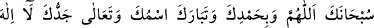
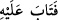

kızgınlık ve istihfâf sözkonusu değildir. Çünkü tevbeden sonra bunlar olmaz. “Kelimât
telakkî etmek” demek onları alıp kabûl ile onlarla amel etmektir. Âyetteki “kelimât”
diye anlatılan emirlerin neler olduğu A’râf Sûresi 23. âyette anlatılmaktadır. Hâfız der
ki:
İbâdetine aldanan zâhid, selâmet yolunu bulamaz,
Rind-meşreb olan samîmî niyâz ile selâmet yurduna varır.
İbn Mesûd’un rivâyetine göre “Allah’a en sevimli gelen söz, Âdem’in hatâsını i’tirâf
ederek söylediği şu sözdür:
Peygamberimiz (s.a.)’den rivâyet olunduğuna göre: Âdem (a.s.): “Yâ Rabbi,
Muhammed hakkı için beni affet” dedi. Allah Teâlâ: “Muhammed’i nereden
biliyorsun?” deyince Âdem cevâben: “Beni yaratıp rûhumu üfledin. Gözlerimi açar
açmaz Arş’ın üstünde:
Allah’dan başka ilâh yoktur.
Muhammed onun Rasûlüdür’ yazıldığını gördüm. O zaman anladım ki, mahlûkatın sana
en sevgilisi Muhammed’dir. Çünkü ismini kendi isminin yanında zikretmişsin” dedi.
Allah Teâlâ da onu Hz. Muhammed hatırına affetti.[250]
Bir başka görüşe göre kelimelerden maksad, Hz. Âdem’in yeryüzüne inerken
söylediği şu sözlerdir: “Yâ Rabbi beni vâsıtasız olarak ellerinle yaratmadın mı? Yâ
Rabbi, cenneti bana mekân kılmadın mı? Yâ Rabbi rahmetin gazabından çok değil mi?”
Allah Teâlâ bütün bu sorulara “Evet” diye cevap verdi. Bunun üzerine Âdem (a.s.): “Ya
Rabbi, kendimi ıslah eder, sana rucû eder, tevbe edersem beni cennete tekrar koyar
mısın?” dedi. Cenâb-ı Hakk da cevâben: “Evet” buyurdu.
“Kelimât” Âdem’in Allah’a verdiği sözler, O’na yaptığı münâcâttır. Âdem (a.s.)
hatâsını îtirâf ederek işlediği günahtan dönmüş, Rabbine tevbe etmiştir.
“Tevbe”nin aslı dönmek, yönelmektir. Tevbe, kulun vasfı olursa günahtan tâata
yönelmek, demektir. Allah’a izâfe olunursa O’nun kulu cezâlandırmaktan vazgeçip afva
yönelmesi mânâsına gelir. (__WORD__) âyetinin başındaki: “fa” tevbenin, “kelimelerin”
telakkî edilmesinden sonra olduğunu göstermektedir. Kulun tevbesi şu şartlarla tamam
olur:
1. İşlediği günaha pişman olmak,
2. Hâlihâzırda günahı terketmek,
3. İleride aynı günahı tekrar işlememeye azmetmek,
4. Üzerinde hakkı bulunanların haklarını ödeyerek helâllaşmak.
Havvâ, hükümlerde Âdem’e tâbi olduğu için âyette sadece Âdem’in ismi
zikredilmiştir. Kur’ân ve sünnette kadınlara verilen emirlerde “müzekker sîgası”
kullanılmıştır.